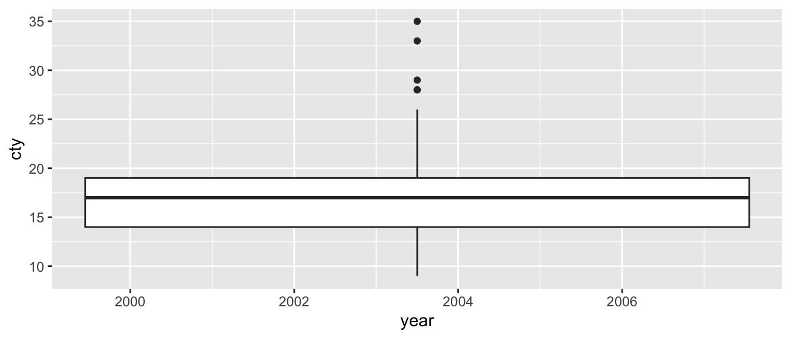
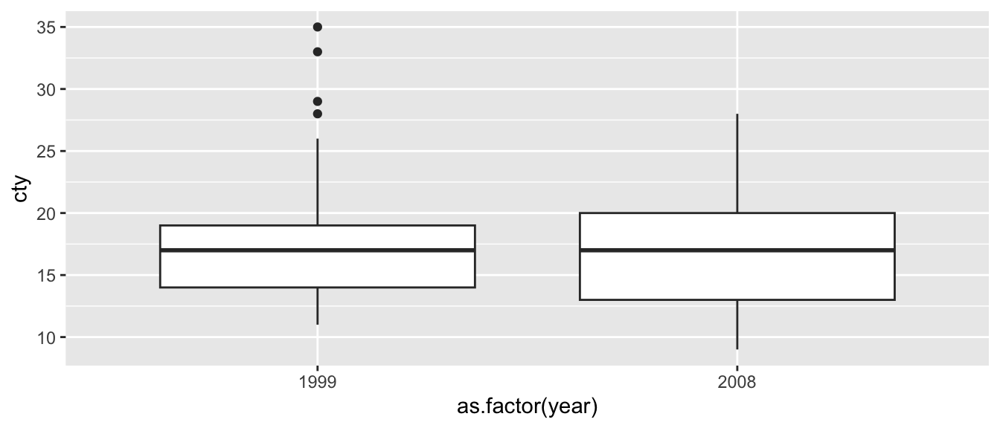
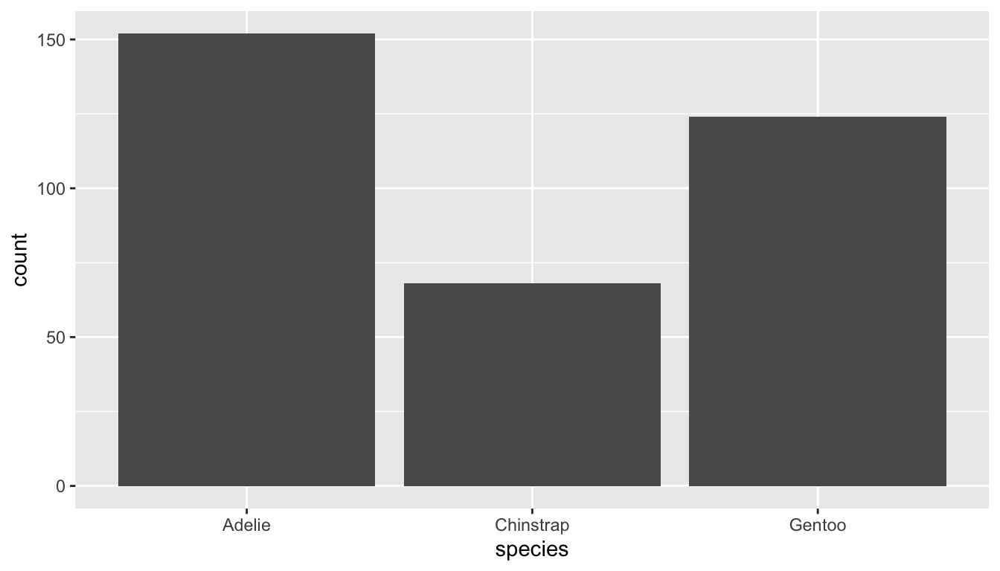
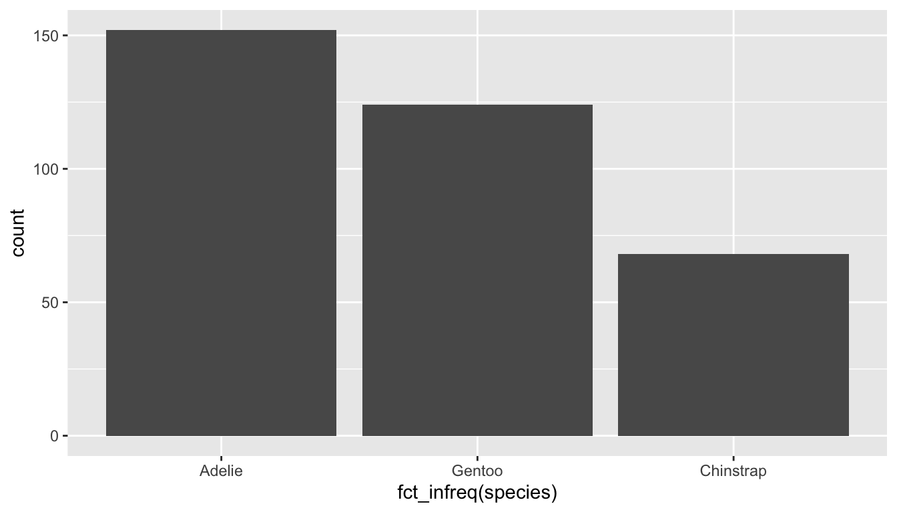
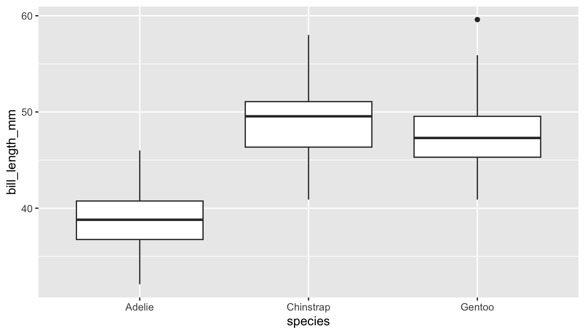
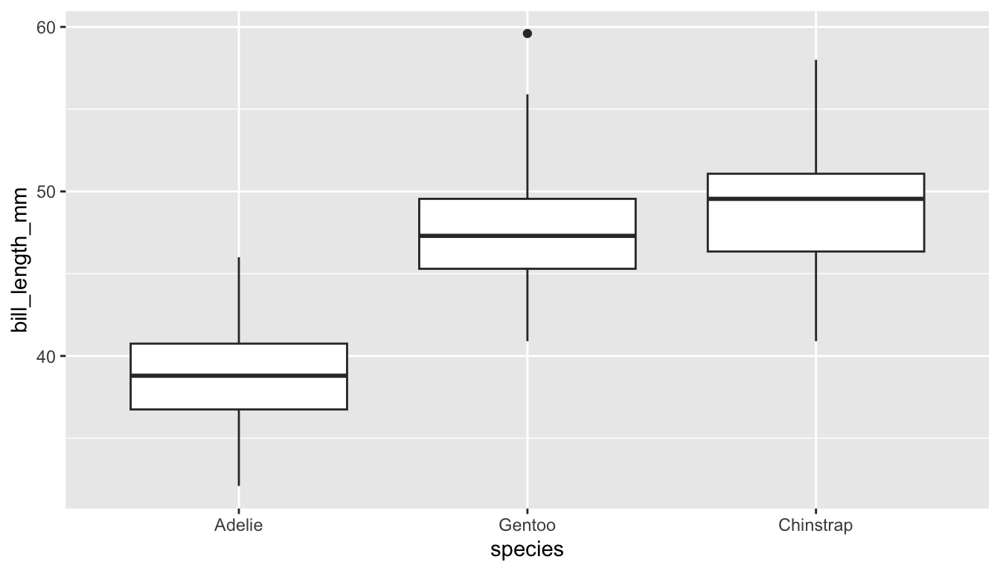
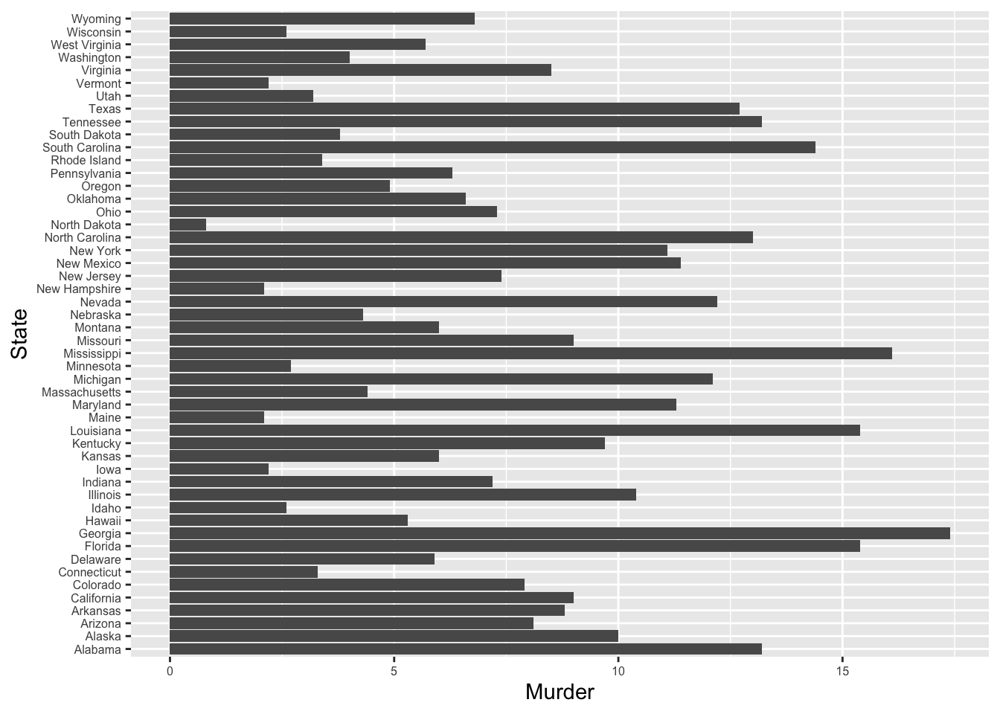
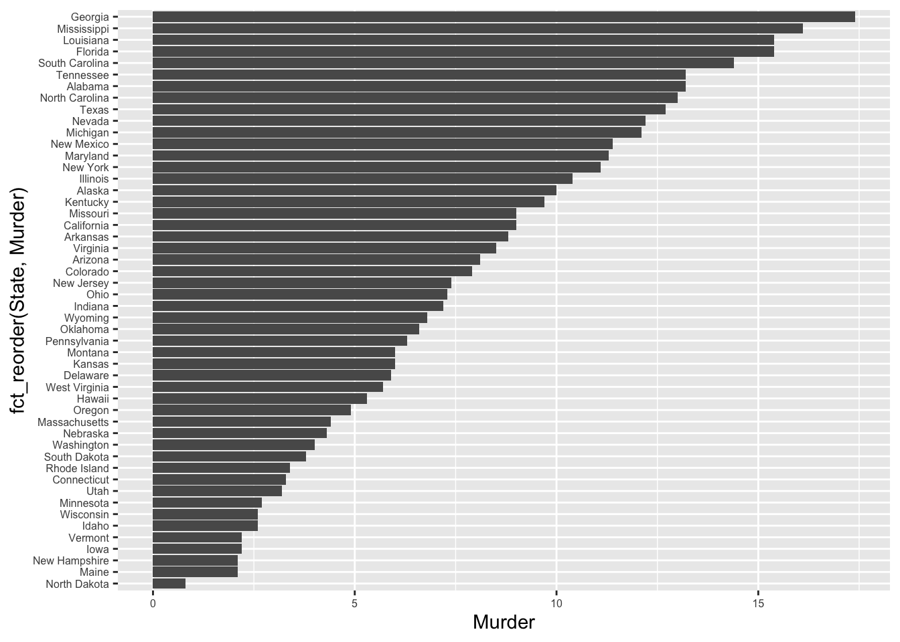
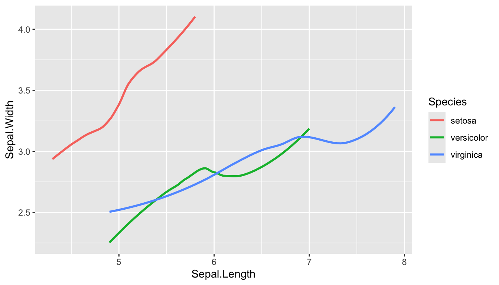
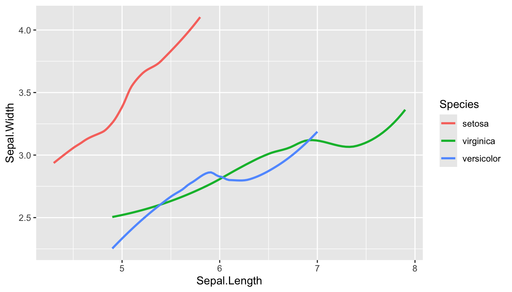

Code
x <- c('Maryland','Virginia', 'District', 'Maryland','Virginia') # a character vector
xf <- as.factor(x)
xf[1] Maryland Virginia District Maryland Virginia
Levels: District Maryland VirginiaCategorical variables are variables that
factor data typeR stores categorical variables as type factor.
as.factor.is.factor.factor.factor function
factor(x = character(), levels, labels = levels, exclude = NA, ordered = is.ordered(x), nmax = NA)
factor returns an object of class “factor” which has a set of integer codes the length of x with a “levels” attribute of mode character and unique
level which is a character, describing the level.labels to each level to change the printed form of the factor.x <- c('Maryland','Virginia', 'District', 'Maryland','Virginia') # a character vector
xf <- as.factor(x)
xf[1] Maryland Virginia District Maryland Virginia
Levels: District Maryland VirginiaThere are three levels, that by default are in alphabetical order
as.integer(xf)[1] 2 3 1 2 3as.character(xf)[1] "Maryland" "Virginia" "District" "Maryland" "Virginia"Now let’s look at what happens when we convert a numeric vector to a factor
y <- c(5, 3, 9, 4, 5, 3)
yf <- as.factor(y)
yf[1] 5 3 9 4 5 3
Levels: 3 4 5 9Levels are still in alphanumeric order
as.numeric(yf)[1] 3 1 4 2 3 1as.numeric(as.character(yf))[1] 5 3 9 4 5 3x <- c('MD','DC','VA','MD','DC')
xf <- factor(x)
unclass(xf)[1] 2 1 3 2 1
attr(,"levels")
[1] "DC" "MD" "VA"x <- c('MD','DC','VA','MD','DC')
xf <- factor(x, levels = c('MD','DC','VA'))
unclass(xf)[1] 1 2 3 1 2
attr(,"levels")
[1] "MD" "DC" "VA"The drv variable in the mpg dataset tells us the kind of drive (front, rear or 4-wheel) each car has. However it’s coded as f, r, and 4, which is not great for display purposes. We can re-label these levels, but we have to be a bit careful
x <- mpg$drv
xf <- factor(x,
1 levels = c('4-wheel','Front wheel',
'Rear wheel'))
head(xf)[1] <NA> <NA> <NA> <NA> <NA> <NA>
Levels: 4-wheel Front wheel Rear wheel[1] Front wheel Front wheel Front wheel Front wheel Front wheel Front wheel
Levels: 4-wheel Front wheel Rear wheelLevels have to match what’s actually in the original data, but you can re-label the levels.
ggplot(mpg,
aes(year, cty))+
geom_boxplot()Warning: Continuous x aesthetic
ℹ did you forget `aes(group = ...)`?
ggplot(mpg,
aes(as.factor(year), cty))+
geom_boxplot()
Modeling is a numerical enterprise, where we optimize a function of numerical variables to fit a numerical outcome. So categorical variables need to be converted to some numerical representation. The most common approach is to use dummy variables (also called indicator variables or one-hot encoding). With this approach, if a factor has n levels, we create n-1 new binary variables, each taking on values 0 or 1. Each new variable indicates whether the observation belongs to that level or not. The level corresponding to integer code 1 is omitted as the reference level.
For example, if we have a factor race with levels White, Black, Hispanic, Asian, Native American, we can create 4 new binary variables black, hispanic, asian, native_american, where each variable takes on value 1 if the observation belongs to that race, and 0 otherwise. White is the reference level, so if all 4 new variables are 0, then the observation is White.
Coding categories as integers implies an ordering and distance between the categories that may not exist. For example, if we code race categories as 1 = White, 2 = Black, 3 = Hispanic, 4 = Asian, 5 = Native American, then we are implying that the difference between White and Black is the same as the difference between Hispanic and Asian. This is not true, and can lead to misleading results in models. There is no reasonable interpretation of this difference.
model.matrix(~species, data = palmerpenguins::penguins) (Intercept) speciesChinstrap speciesGentoo
1 1 0 0
2 1 0 0
3 1 1 0
4 1 1 0
5 1 0 1
6 1 0 1
attr(,"assign")
[1] 0 1 1
attr(,"contrasts")
attr(,"contrasts")$species
[1] "contr.treatment"Changing the base level (integer code 1) changes model interpretation since it changes the reference level against which all other levels are compared.
This enconding is automatically done when a factor is used as an independent variable in a model.
Note on contrasts
R uses treatment contrasts by default, which is the dummy variable approach described above. Other contrast schemes are possible, such as sum contrasts, Helmert contrasts, polynomial contrasts, etc. See ?contrasts for more details.
forcats package (part of tidyverse)library(palmerpenguins)
m <- lm(body_mass_g ~ species, data = penguins)
broom::tidy(m)# A tibble: 3 × 5
term estimate std.error statistic p.value
<chr> <dbl> <dbl> <dbl> <dbl>
1 (Intercept) 3701. 37.6 98.4 2.49e-251
2 speciesChinstrap 32.4 67.5 0.480 6.31e- 1
3 speciesGentoo 1375. 56.1 24.5 5.42e- 77Compare with Adele
p1 <- penguins %>%
mutate(species = fct_relevel(species, 'Gentoo'))
m1 <- lm(body_mass_g ~ species, data=p1 )
broom::tidy(m1)# A tibble: 3 × 5
term estimate std.error statistic p.value
<chr> <dbl> <dbl> <dbl> <dbl>
1 (Intercept) 5076. 41.7 122. 6.86e-282
2 speciesAdelie -1375. 56.1 -24.5 5.42e- 77
3 speciesChinstrap -1343. 69.9 -19.2 3.21e- 56Compare with Gentoo
Providing only one level to fct_relevel makes that the base level (integer code 1).
You can also fully specify all the levels in order, or partially specify them. If you partially specify them, the remaining levels will be put in alphabetical order after the ones you specify.
ggplot(penguins,
aes(x = species))+
geom_bar()
ggplot(p1,
aes(x = species))+
geom_bar()Changes the order in which bars are plotted
x <- factor(str_split('statistics', '')[[1]],
levels = letters)
x [1] s t a t i s t i c s
Levels: a b c d e f g h i j k l m n o p q r s t u v w x y zp1 <- penguins %>% filter(species != 'Gentoo')
fct_count(p1$species)# A tibble: 3 × 2
f n
<fct> <int>
1 Adelie 152
2 Chinstrap 68
3 Gentoo 0fct_drop(x) [1] s t a t i s t i c s
Levels: a c i s tp1 <- p1 %>% mutate(species = fct_drop(species))
fct_count(p1$species)# A tibble: 2 × 2
f n
<fct> <int>
1 Adelie 152
2 Chinstrap 68Getting rid of extra levels
Sometimes levels with no data show up in summaries or plots
ggplot(penguins,
aes(x = species))+
geom_bar()
ggplot(penguins,
aes(x = fct_infreq(species)))+
geom_bar()
Ordering levels from most to least frequent
ggplot(penguins,
aes(x = species,
y = bill_length_mm))+
geom_boxplot()
ggplot(penguins,
aes(x = fct_reorder(species, bill_length_mm,
.fun=median, na.rm=T),
y = bill_length_mm))+
geom_boxplot() + labs(x = 'species')
fct_reorder is useful for ordering a plot by ascending or descending levels. This makes the plot easier to read.
USArrests <- USArrests %>% rownames_to_column('State')ggplot(USArrests, aes(x=State, y = Murder))+
geom_bar(stat = 'identity') +
theme(axis.text = element_text(size=6))+
coord_flip()
ggplot(USArrests, aes(
x = fct_reorder(State, Murder),
y = Murder))+
geom_bar(stat = 'identity')+
theme(axis.text = element_text(size=6))+
coord_flip()
The level ordering also shows up in the order of levels in the legends of plots. Suppose you are plotting two variables, grouped by a factor.
ggplot(iris, aes(
x = Sepal.Length,
y = Sepal.Width,
color = Species))+
geom_smooth(se=F)
ggplot(iris, aes(
x = Sepal.Length,
y = Sepal.Width,
color = fct_reorder2(Species,
Sepal.Length, Sepal.Width)))+
geom_smooth(se=F) + labs(color = 'Species')